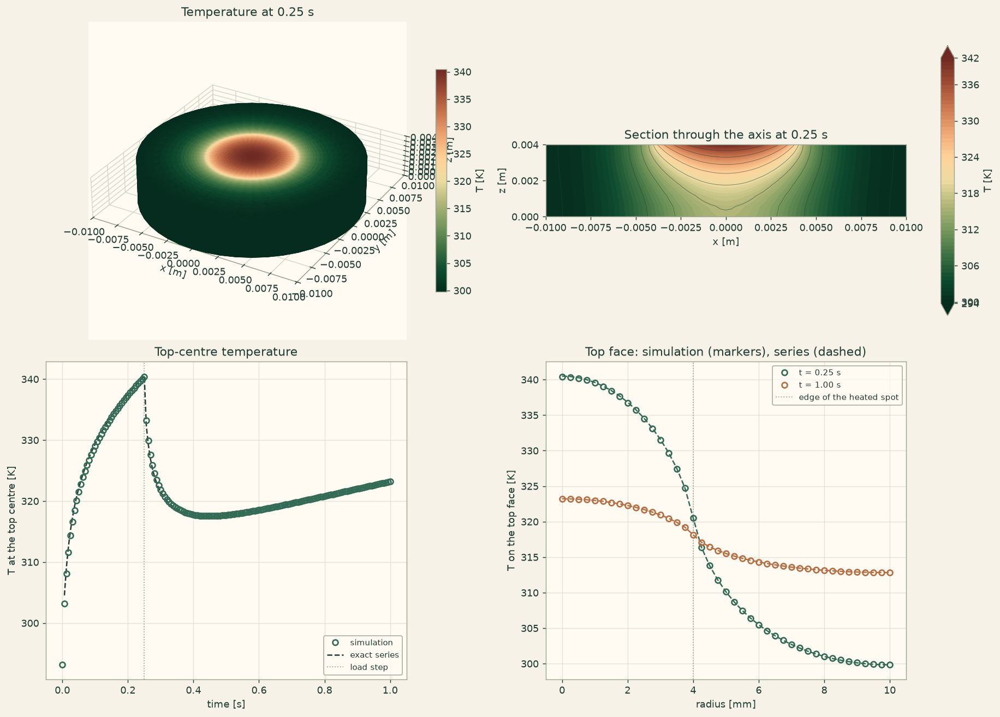

Docs › Examples › Transient heating with step changes in the load
Heat transfer · 3D
Transient heating with step changes in the load
A silicon disc heated through a central spot whose power steps down mid-run: how mesh and time-step control decide the accuracy.

What it computes
OneSimulation solves the transient heat equation on a block-structured 3D disc of 27-node hexahedra graded towards the spot edge, and integrates in time with an adaptive IMEX-SDIRK2 scheme with error control, compared with fixed steps and with steps that miss the load switch.
What it checks
The temperature agrees with the exact Fourier-Bessel series to about 1e-4 K, the stored energy to 0.0003 %, and the notebook shows why an integrator that is not told about the load switch can be wrong by several kelvin.
The notebook
The complete notebook, cell by cell. Run it to produce the figures and the comparison printout.
A silicon disc (20 mm diameter, 4 mm thick) is heated over a central spot of 8 mm diameter on its top face. The absorbed flux is uniform on the spot, high at first and then stepped down:
The load jumps in space (at the spot edge) and in time. The temperature obeys \(\rho c_p\,\partial_t T=\nabla\cdot(k\nabla T)\). The whole top face radiates to the surroundings at 293.15 K (linearised, \(h_r=4\varepsilon\sigma T_a^3\)); the bottom and the rim are insulated.
Reference. The problem has an exact solution, a series in \(J_0(\lambda_m r)\) over the roots of \(J_1(\lambda R)=0\) (Carslaw and Jaeger, Conduction of Heat in Solids). Each load level switched on at \(t_j\) adds a steady part and a decaying part with the rates \(\alpha(\lambda_m^2+\mu_n^2)\), where \(\mu_n\tan(\mu_nH)=h_r/k\).
import numpy as np
from scipy.optimize import brentq
from scipy.special import j0, j1, jn_zeros
from onesim.cad.d2 import Plane
from onesim.materials import IsotropicSolid
from onesim.meshing import ExplicitGeometry, Geometric, disc_blocks, extrude, merge_blocks
from onesim.numerics import Numerics
from onesim.numerics.fem import FiniteElement, Lagrange
from onesim.numerics.linear import SparseDirect
from onesim.numerics.time import BackwardEuler
from onesim.physics.heat_transfer import ConvectiveHeatFlux, HeatConduction, HeatFlux
from onesim.simulation import Problem, Simulation, step
from onesim.simulation.initial_conditions import InitialValue
from onesim.visualization import theme, plots
theme.set()
radius, height, spot = 0.010, 0.004, 0.004
conductivity, density, heat_capacity, ambient = 148.0, 2330.0, 712.0, 293.15
diffusivity, radiation = conductivity / (density * heat_capacity), 4 * 0.7 * 5.670e-8 * ambient**3
high, low, switch, end_time, time_step = 2.0e6, 0.5e6, 0.25, 1.0, 0.00625
def exact_rise(r, times, modes=(2000, 200)):
"""Temperature rise on the top face at the radii r from the Fourier-Bessel series."""
lam = np.r_[0.0, jn_zeros(1, modes[0] - 1)] / radius
mu = np.array([brentq(lambda x: x * np.tan(x) - radiation * height / conductivity, n * np.pi + 1e-300, n * np.pi + 1.0)
for n in range(modes[1])]) / height
source = np.where(lam > 0, spot * j1(lam * spot) / np.maximum(lam, 1e-300), spot**2 / 2) / (radius**2 / 2 * j0(lam * radius) ** 2)
radial = source * j0(np.outer(r, lam))
steady = radial @ ((1 + np.exp(-2 * lam * height))
/ (conductivity * lam * (1 - np.exp(-2 * lam * height)) + radiation * (1 + np.exp(-2 * lam * height))))
axial = diffusivity / conductivity * np.cos(mu * height) ** 2 / (height / 2 + np.sin(2 * mu * height) / (4 * mu))
rate = diffusivity * (lam[:modes[1], None] ** 2 + mu**2)
response = lambda t: steady - (radial[:, :modes[1]] @ (np.exp(-rate * t) / rate)) @ axial
return np.array([sum((level * response(t - start) for start, level in ((0.0, high), (switch, low - high)) if t > start),
np.zeros(len(radial))) for t in times])Mesh and model
disc_blocks builds the disc from a centre block, a ring up to the spot edge and a ring out to the rim, so the edge of the heated spot lies on element faces. The cells are graded towards the spot edge and the top face. The spot carries the radiation loss together with the stepped load, written as a convective condition with the ambient temperature \(T_a+q(t)/h_r\). The backward Euler integrator evaluates the load at the end of each step, so the switch is placed between two step ends: the steps up to 0.25 s see the high load, all later steps the low one.
def face_name(point, normal):
"""Name of a boundary face from its position."""
x, y, z = point
if abs(z - height) < 1e-9 * height:
return "spot" if np.hypot(x, y) < spot else "top_ring"
return "insulated"
disc = ExplicitGeometry(dimension=3, boundary_names=("spot", "top_ring", "insulated"), classifier=face_name)
faces = disc.boundaries
blocks = disc_blocks((0, 0), (spot, radius), 4, (4, 6), core=0.45,
gradings=(Geometric(4, ratio=3.0, toward="end"), Geometric(6, ratio=6.0)))
mesh = extrude(merge_blocks(blocks, order=2), height, Geometric(4, ratio=4.0, toward="end"), geometry=disc)
silicon = IsotropicSolid(density=density, specific_heat_capacity=heat_capacity, thermal_conductivity=conductivity,
youngs_modulus=130e9, poisson_ratio=0.28, thermal_expansion_coefficient=2.6e-6)
model = HeatConduction(domain=disc.domain(), material=silicon, heating=0.0)
load = step(switch + time_step / 2, before=high, after=low)
problem = Problem(name="Disc heated by a stepped spot load", geometry=disc, physics=(model,), boundary_conditions=(
ConvectiveHeatFlux(boundary=faces.spot, physics=model, heat_transfer_coefficient=radiation,
ambient_temperature=ambient + (1 / radiation) * load),
ConvectiveHeatFlux(boundary=faces.top_ring, physics=model, heat_transfer_coefficient=radiation, ambient_temperature=ambient),
HeatFlux(boundary=faces.insulated, physics=model, value=0.0)),
initial_conditions=(InitialValue(model.temperature, ambient),))
numerics = Numerics(spatial=FiniteElement(element=Lagrange(order=2)), linear_solver=SparseDirect(), time_integrator=BackwardEuler())
result = Simulation(problem=problem, mesh=mesh, numerics=numerics).run(start_time=0.0, end_time=end_time, time_step=time_step)
temperature = result.field(model.temperature)Results
The temperature rise at the centre of the top face against the series.
times, centre = temperature.time_series([[0.0, 0.0, height]])
centre = centre.ravel() - ambient
series = exact_rise([0.0], times)[:, 0]
print("time [s] simulation [K] exact series [K] deviation [K]")
for index in (8, 24, 40, 44, 56, 80, 160):
print(f"{times[index]:8.3f} {centre[index]:16.3f} {series[index]:18.3f} {centre[index] - series[index]:15.3f}")
print(f"largest deviation later than 0.05 s after each load change: "
f"{np.abs(centre - series)[(times > 0.05) & ((times <= switch) | (times > switch + 0.05))].max():.3f} K")Figure
The surface temperature at the end of the high load, a section through the axis at the same time, the temperature at the top centre over time, and the temperature along the top face.
r = np.linspace(0, radius, 41)
top = np.column_stack((r, np.zeros_like(r), np.full_like(r, height)))
profiles = {f"t = {t:.2f} s": (1e3 * r, temperature.evaluate(top, time=t).ravel()) for t in (switch, end_time)}
exact_profiles = {f"t = {t:.2f} s": (1e3 * r, ambient + exact_rise(r, [t])[0]) for t in (switch, end_time)}
fig = plots.figure(2, 2, size=(14, 10))
plots.surface(temperature, time=switch, boundary=faces.spot | faces.top_ring | faces.insulated, subdivisions=3,
camera=plots.Camera(elevation=30, azimuth=-60), label="T [K]", title="Temperature at 0.25 s", ax=fig[0])
plots.section(temperature, time=switch, plane=Plane(origin=(0, 0, 0), normal=(0, 1, 0)), contours=12, subdivisions=3,
label="T [K]", title="Section through the axis at 0.25 s", ax=fig[1])
plots.line(points={"simulation": (times, ambient + centre)}, reference={"exact series": (times[1:], ambient + series[1:])},
vlines={"load step": switch}, xlabel="time [s]", ylabel="T at the top centre [K]",
title="Top-centre temperature", legend="lower right", ax=fig[2])
plots.line(points=profiles, reference=exact_profiles, vlines={"edge of the heated spot": 1e3 * spot}, xlabel="radius [mm]",
ylabel="T on the top face [K]", title="Top face: simulation (markers), series (dashed)", ax=fig[3])
plots.show()Going further
Replace the linearised radiation by the full \(\varepsilon\sigma(T^4-T_a^4)\) law, add temperature-dependent silicon properties, or replace the step by a train of pulses.